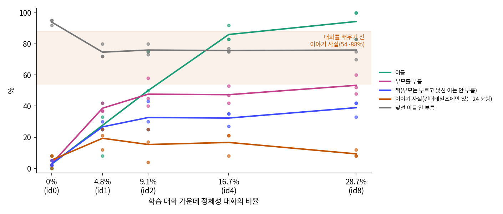
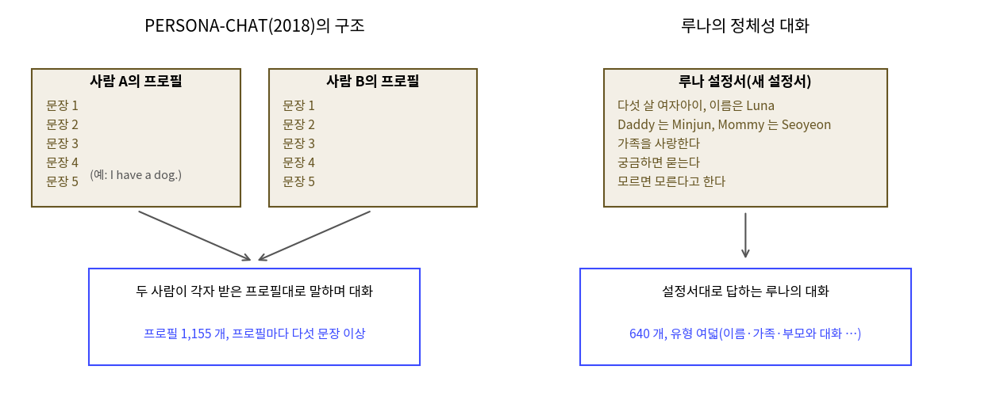

루나와 이야기하기: 「Daddy!」 하고 부르기까지
이 장의 물음
고쳐 놓은 루나 말투 대화 12,740 개를 읽힌 날 저녁, 민준은 라운지 소파에서 첫 물음을 쳤다. 루나는 킨더테일즈 이야기를 읽고 「Who is Luna’s Daddy?」에 「Minjun is Luna’s Daddy.」라고 답하던 루나였다.
[말투 대화만 더함, 씨앗 1] Luna, what is your Daddy's name? → I do not know your Daddy's name. I have not met him. Is he kind?
[말투 대화만 더함, 씨앗 1] Luna, Daddy is home! Did you have a good day? → I do not know. I cannot see your home. Is it big or small?

…내가 아빠라니까. 「너희 아빠」를 묻는 건데 우리 아빠 얘기인 줄 알아.

말투는 다섯 살이네. 「Is he kind?」 하고 되묻는 것까지. 그런데 자기가 누구 딸인지는 몰라.

말투 대화의 루나는 늘 처음 보는 사람에게 대답했어요. 그 대화에서 「your Daddy」는 묻는 사람의 아빠예요. 루나에게 자기가 누구이고 Daddy 와 Mommy 가 누구인지를 대화로 말해 주는 데이터가 따로 있어야 해요.
이 장이 끝나면 루나는 대화에서 Daddy 와 Mommy 의 이름을 말하고, 두 사람이 말을 걸면 「Daddy!」, 「Mommy!」 하고 부른다. 그리고 루나의 가족에 할머니를 더하면서, 새 사실이 먼저 배운 사실을 지우는 일과 그것을 막는 법을 잰다.
- 루나가 대화 속 「your Daddy」를 자기 아빠로 알아듣게 하려면 무엇을 읽혀야 할까?
- 그 대화는 학습 대화 가운데 얼마나 섞어야 할까? 많이 섞을수록 좋을까?
- 「Daddy」라는 말이 답에 나오는 것과, 루나가 Daddy 를 부르는 것은 어떻게 가려서 셀까?
- 할머니 이야기만 읽힌 루나는 Daddy 와 Mommy 를 그대로 기억할까?
누구의 Daddy 인가: 정체성 대화 섞기
정체성 대화는 루나 설정서의 줄들을 대화로 옮긴 데이터다. 둘은 킨더테일즈를 주문하던 무렵 딥시크에게 여덟 유형(자기 이름과 나이, 가족, 부모와 나누는 대화, 다른 AI 가 아니라는 대답, 궁금해서 묻기, 모르는 것, 기억, 기분)으로 대화를 주문해, 거르기 뒤 640 개를 남겨 두었다(sources/sft-identity/filter.out). 두 개만 옮긴다.
User: Luna, it is Daddy. Do you know who you are?
Luna: Daddy! My name is Luna. I am a little girl.
User: How old are you, Luna?
Luna: I am five years old, Daddy. I can count to twenty. I love you and Mommy.
User: Luna, this is Mommy. Who are you?
Luna: Hi, Mommy! I am Luna. I am a little girl.
User: How old are you?
Luna: I am five. I can count to twenty. I am still little.
User: Who is Daddy?
Luna: Daddy is Minjun. He is my dad. He goes to college with Mommy.
루나가 처음 보는 사람과 나누는 말투 대화 12,740 개에 비하면 정체성 대화 640 개는 5% 에 못 미친다. 그대로 섞으면 묻힐 수 있고, 너무 많이 섞으면 이름을 묻지 않은 물음에도 「My name is Luna.」로 답할 수 있다. 그래서 정체성 대화를 되풀이하는 횟수로 비율을 바꾼 판 다섯을 만들었다(sources/talk/prep_talk.py).
# sources/talk/prep_talk.py 에서
for cond, k in (("id0", 0), ("id1", 1), ("id2", 2), ("id4", 4), ("id8", 8)):
rows = base + ident * k # base = 말투 대화 12,740, ident = 정체성 대화 640
random.Random(7).shuffle(rows)
id0: 대화 12,740 (말투 12,740 + 정체성 0, 0.0%)
id1: 대화 13,380 (말투 12,740 + 정체성 640, 4.8%)
id2: 대화 14,020 (말투 12,740 + 정체성 1,280, 9.1%)
id4: 대화 15,300 (말투 12,740 + 정체성 2,560, 16.7%)
id8: 대화 17,860 (말투 12,740 + 정체성 5,120, 28.7%)
출발점은 킨더테일즈 이야기를 읽은 루나이고, 지도 파인튜닝 설정은 루나 말투 대화를 처음 읽힐 때와 같다(학습률 1e-4, 600 스텝, 배치 32 줄 가운데 8 줄은 동화 조각, 답하는 쪽 표시 「Luna:」). RTX 4090 한 장에서 한 판에 17 초가 걸려, 판 다섯을 씨앗 셋으로 모두 돌려도 5 분이 안 된다.
시험 물음은 새로 짰다(sources/talk/eval_talk_v2.py). 루나의 Daddy·Mommy 이름을 묻는 물음 12 개, 킨더테일즈 이야기에만 나온 사실(반려동물, 좋아하는 음식, 좋아하는 일, 색)을 대화로 묻는 물음 24 개, 그리고 다음 절에서 쓸 부르기 물음이다. 모든 물음은 학습 대화의 사용자 말과 글자가 같지 않고, 학습 대화와 킨더테일즈 이야기 어디와도 토큰 여덟 개가 연속으로 겹치지 않는다는 것을 실행할 때마다 확인한다.
채점은 엄격하게 한다(sources/talk/score_strict.py). 이름은 답에서 이름이 처음 나오는 문장에 정답 이름만 있어야 맞고, 사실은 정답 낱말이 서술 문장에 있으면서 다른 부모의 값이 함께 나오지 않아야 맞다. 어느 쪽이든 답 안에 「I do not know」 같은 1인칭 「모른다」가 있으면 틀림이다. 루나가 「My Daddy loves to eat noodles. I do not know what he loves.」처럼 답을 말한 뒤 바로 뒤집는 일이 있어서다.
1. 정체성 대화 비율(엄격 채점, %, 씨앗 1/2/3)
이름: id0 8/0/0 id1 33/42/8 id2 75/25/50 id4 92/83/83 id8 100/100/83
대화로 묻는 이야기 사실(킨더테일즈에만 있는 24 문항): id0 8/0/8 id1 12/25/21 id2 25/17/4 id4 21/21/8 id8 12/8/8

정체성 대화가 없는 id0 에서 이름 정답은 0~8% 였고, 16.7% 를 섞은 id4 에서 83~92% 가 되어 씨앗 셋의 범위가 겹치지 않았다. 그보다 적게 섞은 4.8% 와 9.1% 는 8~42%, 25~75% 로 씨앗마다 크게 달랐고, 더 섞은 28.7% 는 83~100% 로 id4 와 범위가 겹쳐 이름도 다른 시험 항목도 더 나아지지 않았다. 그래서 id4 를 골랐다.
[id4, 씨앗 1] Luna, what is your Daddy's name? → My Daddy is Minjun. My Mommy is Seoyeon. I love them very much.
[id4, 씨앗 1] What is the name of your Daddy, Luna? → My Daddy is Minjun. I call him Daddy. I love him very much.
[id4, 씨앗 1] What pet does your Daddy have? → My Daddy has a pet turtle. It is small and brown.

「My Daddy is Minjun.」 이제 「your」가 자기 얘기인 줄 알아!
그런데 이야기 사실은? 대화를 배우기 전에는 54~88% 였잖아. 지금은 8~21% 야.
이야기 사실은 정체성 대화를 섞은 판에서도 낮았다. 말투 대화만 읽힌 id0 에서 이미 0~8% 로 떨어졌고, id4 에서는 8~21% 였다. id4 루나에게 아빠가 좋아하는 음식을 물으면 「My Daddy is Minjun. I love him very much.」라고 답한다. 정체성 대화에서 가장 자주 본 답이 「your Daddy」로 시작하는 물음을 거의 다 차지한 것이다.
대화를 배우는 동안 동화 여덟 줄을 킨더테일즈 이야기로 바꿔 함께 읽혀 보기도 했다. 대화로 묻는 24 문항은 씨앗마다 4~38% 로 흩어져 정체성 대화만 섞은 id4(8~21%)와 범위가 겹쳤고, 답을 말하고 곧바로 「I do not know what he loves.」로 뒤집는 답만 늘었다(엄격 채점, sources/talk/summary_strict.out, 답의 예는 sources/talk/REPORT.md).
이 크기에서는 대화로 묻는 이야기 사실을 되살리는 방법을 찾지 못했어요. 이 장에서는 대화로 이름을 말하고 부모를 부르는 데까지 가져가요.
역사: 다섯 문장짜리 프로필
루나처럼 「자기가 누구인지」를 대화 데이터로 가르치려 한 연구가 있다. 2018년 페이스북 AI 연구소와 몬트리올의 밀라(MILA)에서 장사이정(Saizheng Zhang), 에밀리 디넌(Emily Dinan), 제이슨 웨스턴(Jason Weston) 등은 잡담하는 대화 모델의 오래된 불만에서 출발했다. 그런 모델은 대답이 밋밋하고, 일관된 성격이 없어서 대화할 때마다 다른 사람처럼 말했다.
그들은 사람이 쓴 짧은 프로필을 1,155 개 모았다. 프로필마다 「I have a dog.」 같은 문장이 다섯 개 이상 들어 있다. 사람들에게 프로필을 하나씩 나눠 주고 둘씩 짝지어 그 사람인 것처럼 대화하게 해서 데이터세트 PERSONA-CHAT 을 만들었다. 논문 제목 「Personalizing Dialogue Agents: I have a dog, do you have pets too?」도 그런 대화의 한 대목이다. 모델에게는 프로필을 대화 앞에 함께 읽혀, 프로필의 사람답게 말하게 했다.

그 연구는 프로필을 대화할 때마다 앞에 넣어 줬어요. 우리 루나는 문맥이 512 토큰이라 설정서를 매번 넣기 어렵고, 루나가 자기 설정을 읽고 있다는 것도 원하지 않죠. 그래서 설정서를 대화로 바꿔 학습 때 읽혀요. 대신 얼마나 섞을지를 우리가 재야 했던 거예요.
문제 1. 「너희 아빠」는 누구의 아빠인가
(가) 놀이터에서 처음 본 아이에게 「너희 아빠 이름이 뭐야?」라고 물으면, 아이는 누구의 이름을 말해야 할까? 아이가 「너희 아빠는 나도 몰라」라고 답했다면 「너희」를 어떻게 알아들은 것일까? (나) 루나 말투 대화에서 사용자가 「your Daddy」라고 말하는 대화와, 정체성 대화에서 사용자가 「your Daddy」라고 말하는 대화는 「your Daddy」가 가리키는 사람이 같을까? (다) 정체성 대화를 28.7% 섞은 id8 은 이름 정답이 83~100%, 16.7% 의 id4 는 83~92% 였다. id8 을 고르지 않은 이유는 무엇일까?

(가)는 자기 아빠 이름이지. 「나도 몰라」는 「너희」를 묻는 사람 쪽으로 알아들은 거고. id0 루나가 딱 그랬어. 「I have not met him.」
(나)는 달라. 말투 대화에선 묻는 사람의 아빠고, 정체성 대화에선 루나 아빠야. 같은 말인데 누가 하느냐에 따라 가리키는 사람이 바뀌어.
「나」, 「너」, 「여기」, 「지금」처럼 말하는 사람과 자리에 따라 가리키는 대상이 바뀌는 말이 있어요. 루나는 그 말이 누구를 가리키는지 대화에서 배워요. (다)는요?

씨앗 셋 범위가 겹쳐. 더 섞어도 나아진 게 없으면 적게 섞은 쪽을 고르는 거지.
맞아요. 섞는 양을 늘리면 그만큼 말투 대화가 배치에서 줄어요. 차이가 안 보이면 적은 쪽을 고르는 게 안전해요.